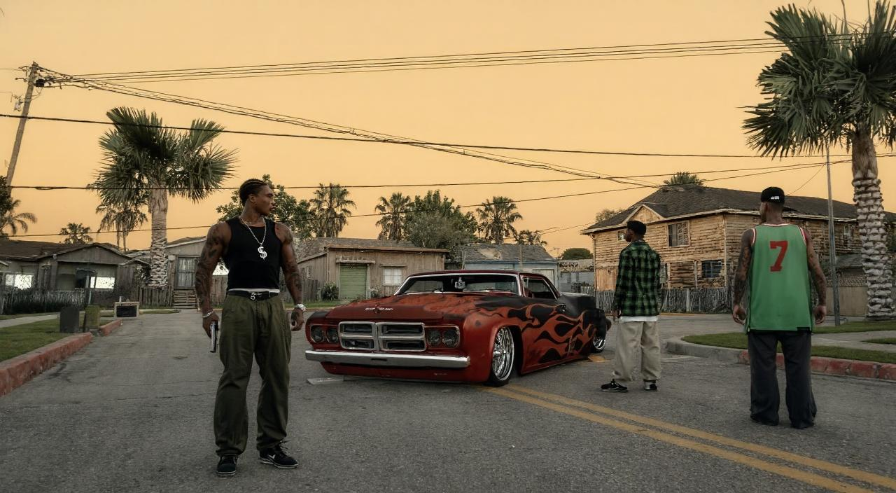
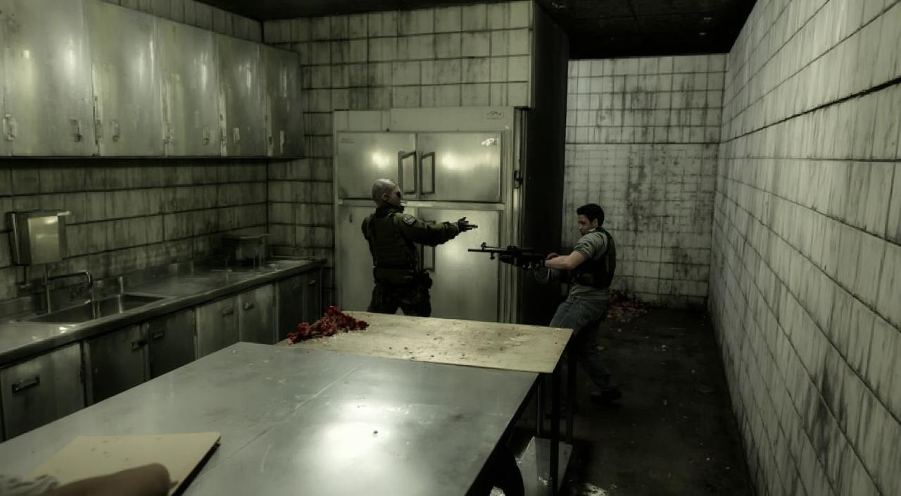
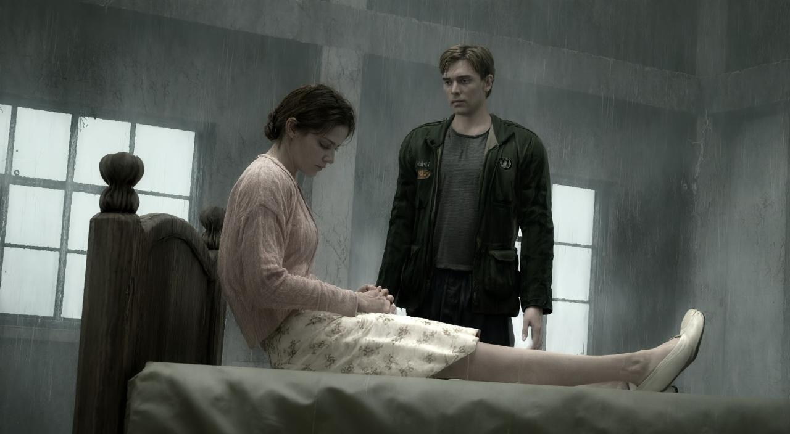
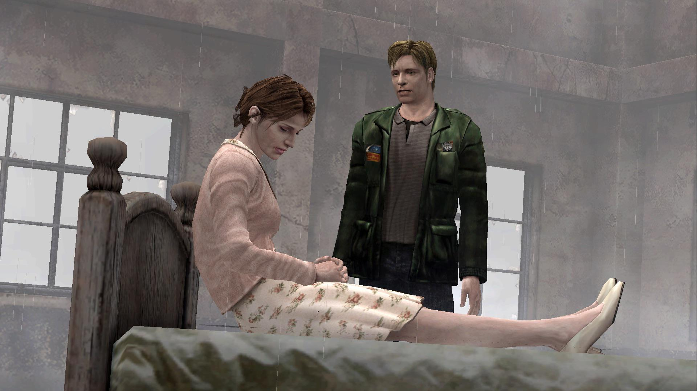
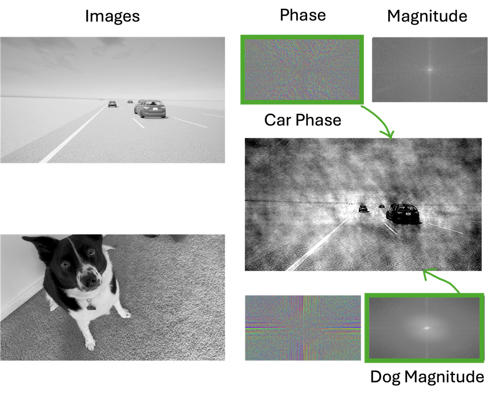
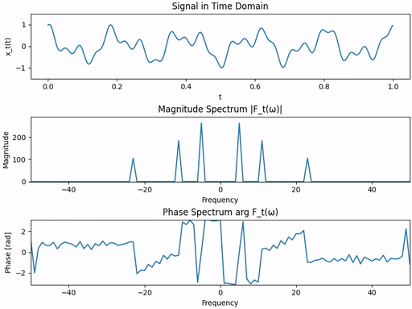
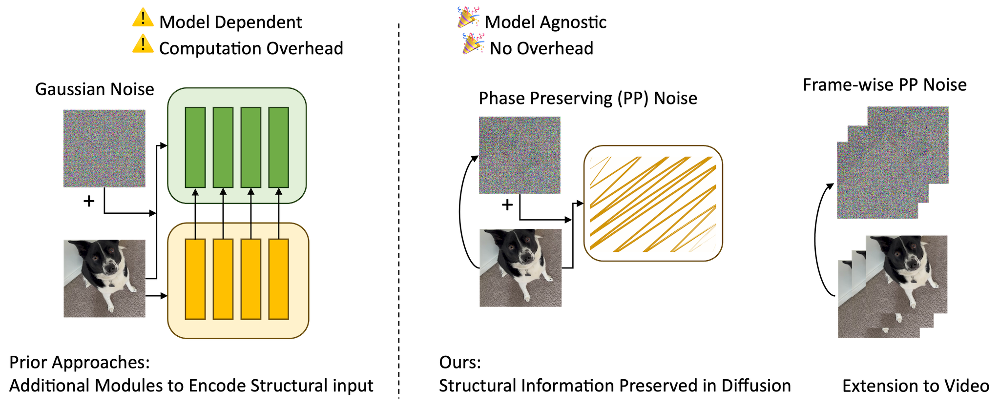
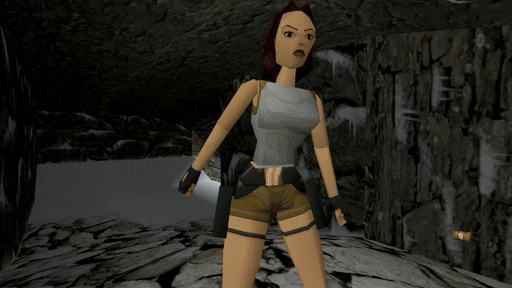
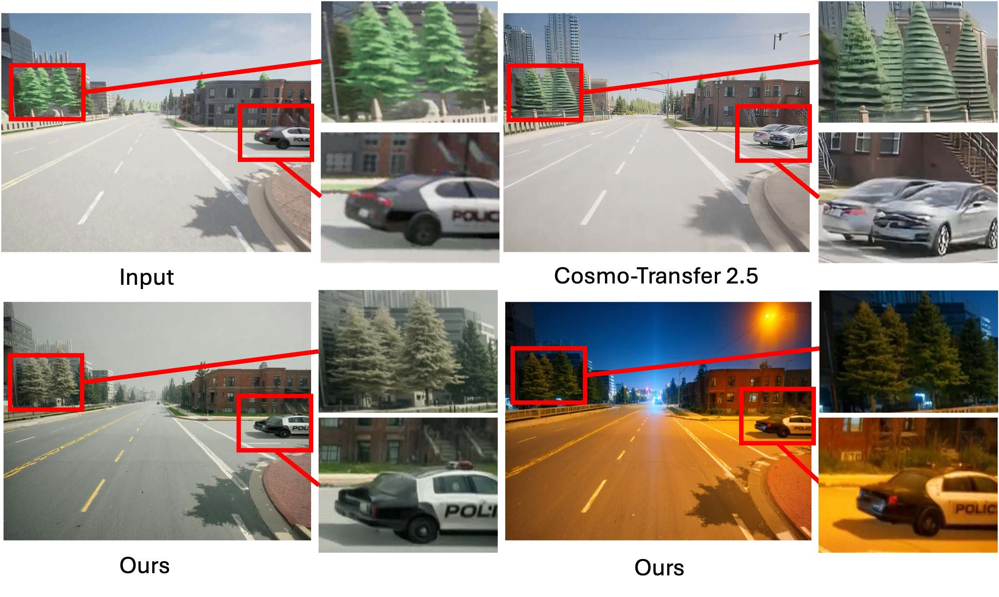
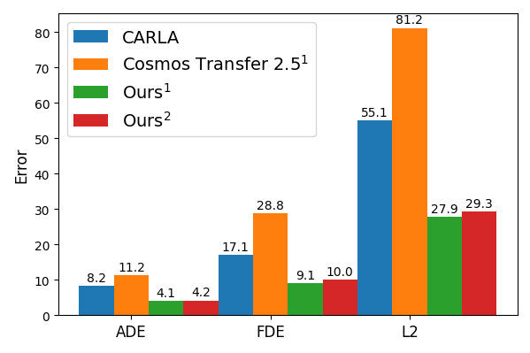

← Drag the bar to compare →
← Drag the bar to compare →




We introduce Phase-Preserving Diffusion (ϕ-PD), a drop-in change to the diffusion process that
preserves image phase while diffusing magnitude — enabling geometry-consistent re-rendering for games,
videos, and simulators.
TL;DR
- Key insight: Replace Gaussian noise with phase-preserving noise: keep input phase, randomize magnitude.
- Control strength: Use one cutoff radius
r to tune alignment strength.
- Plug-and-play: No architectural change, no additional parameters; works with any base model for images and videos.
- Applications: We demonstrate results for photoreal game remasters, autonomous driving simulation enhancement, and stylized re-rendering, while the method can potentially be applied to other structured-aligned generation tasks.
Introducing NeuralRemaster with Phase-Preserving Diffusion
Re-imagine Retro Games
And More
Gaussian Diffusion in Frequency Domain
Most existing diffusion models corrups images with Gaussian noise, and learn to generate images by learning to invert this process.
In frequency domain, Gaussian noise destroys both the magnitude and phase.

Gaussian Diffusion on a 1D signal in frequency domain.
This works well for generating images from scratch (e.g. text-to-image), however, could lead to structural misalignment for image-to-image or video-to-video tasks.
← Drag the bar to compare →
Results from ChatGPT and Qwen-Edit: "Make this look like a real picture". Overlay shows misalignment.
Phase-Preserving Diffusion (ϕ-PD)
Classical signal processing tells us that structural information is encoded in the phase.
If you mix the phase of one image with the magnitude of another, the result keeps the structure of where the phase is from.

Mixing the phase of one image with the magnitude of another preserves the structure of where the phase is fro
Inspired by this observation, we introduce phase-preserving diffusion, diffusing magnitude while keeping most of the phase.

Gaussian Diffusion (left) and Phase-Preserving Diffusion (right) on a 1D signal in frequency domain.
Instead of Gaussian noise, ϕ-PD uses structured noise that shares the image phase. This allows the model to learn to denoise without ever losing structural alignement.
Unlike previous methods, ϕ-PD does not need additional module to encode the structural information from the input. It is model agnostic, works with any base model for images or videos, and makes no architectural changes.

ϕ-PD does not alter the model architectue or training objective, remaining lightweight and model agnostic.
This provides a simple and efficient way to acheive structure-aligned generation with diverse appearance while keeping the original structure.
← Drag the bar to compare →
Qwen-Edit (left) and ϕ-PD (right) on the same input. 🎉 No misalignment!
Controlling Alignment Strength with Frequency-Selective Structured Noise
One perk of ControlNet over simple channel-wise concatenation is that it allows us to control the alignment strength.
ϕ-PD can provide the same flexibility without the need for a heavy encoder module. This is achieved by introducing Frequency-Selective Structured (FSS) noise.
We define a smooth mask in the frequency domain with cutoff radius r:
- Low frequencies (inside
r) keep the image phase → preserve coarse geometry and layout.
- High frequencies use the noise phase → allow appearance variation and detailed edits.

Same noise, different r: large r keeps geometry almost perfectly aligned, small r allows creative edits
Applications in Embodied AI and Sim-to-Real
Autonomous driving
Simulation enhancement
Zero-shot transfer
In autonomous driving and robotics, planners depend on consistent geometry: lane positions, obstacles, and ego
motion. ϕ-PD can enhance simulators like CARLA by re-rendering them to look more like real-world data without
altering the underlying scene.

Comparison to Cosmos-Transfer2.5 (vis input, control weight 0.5).
In our experiments, ϕ-PD achieves up to 50% reduction in ADE/FDE/L2 on Waymo’s WOD-E2E validation set compared to the CARLA-only baseline.

Error of a simple ResNet-34 planner trained on CARLA/transfered images. Lower is better. 1 Zero-shot transfer. 2 With AV finetuning.
Applications in Content Creation
For content creation, given real images or videos, ϕ-PD can generate creative visual effects while keeping the structure intact.

Stylized re-rendering of a dog video. Upper left: original video.
Citation
If you find this work useful, please cite:
@article{zeng2025neuralremaster,
title = {{NeuralRemaster}: Phase-Preserving Diffusion for Structure-Aligned Generation},
author = {Zeng, Yu and Ochoa, Charles and Zhou, Mingyuan and Patel, Vishal M and
Guizilini, Vitor and McAllister, Rowan},
journal = {arXiv preprint arXiv:XXXX.XXXXX},
year = {2025}
}